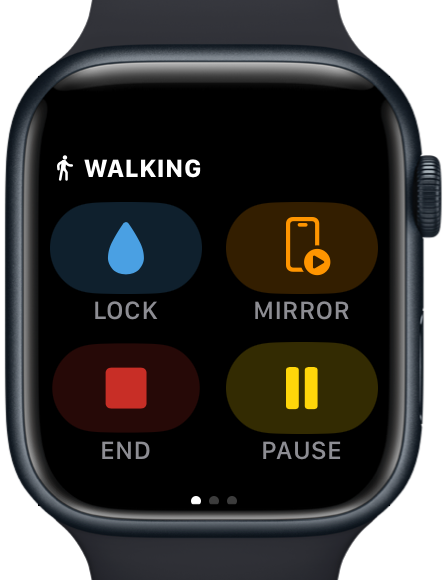
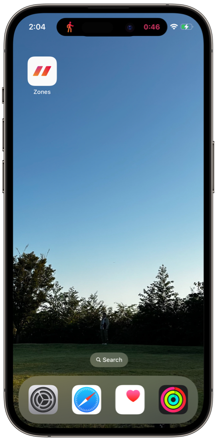
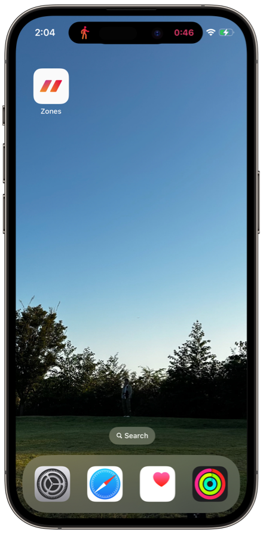

Help
Workout Mirroring
Mirror your workouts on Apple Watch to your paired iPhone.
Please use it for workouts such as treadmill or cycling that you can do while looking at your iPhone.
Required Environment
- Zones v 7.0 and later
- iOS 17 and later
- watchOS 10 and later
How to Use
- Start your workout on your Apple Watch.
- Tap the "Mirror" button on the first page.
 - The "Current Workout" will appear in the "Recent" tab of Zone app on iPhone.
- Tap "Current Workout" to show the Mirroring details screen.
- When you end your workout, the mirror will automatically stop as well.
To optionally stop the mirror, tap the "Mirrorring" button.
Live Activities
 


While mirroring, Live Activities is displayed.
Swipe to delete.
If Live Activities is not displayed
Check authorization for use
- Open "Settings" app on your iPhone
- Tap "Zones"
- Turn on "Live Activities"
A long time has passed
Live activities have a limited display time. iOS will automatically end the live activities after 8 hours.
Reference: Displaying live data with Live Activities > Understand constraints
To view live activity again, stop and start the mirror.